Uporaba UMARvisualisR API-ja
user-facing-umar-chart-API.RmdSetup
Pred prvo uporabo je treba
- namestiti UMARvisualisR knjižnico
- namestiti Aptos font
Namestitev UMARvisualisR knjižnice
# install.packages("devtools")
devtools::install_github("majazaloznik/UMARvisualisR", build_vignettes = TRUE)Potem je knjižnica na voljo za uporabo:
library(UMARvisualisR)Namestitev Aptos fonta
Odpri stran z Aptos fonti in klikni “Download” in si prenesi zip datoteko. Odzippaj in označi vse .ttf datoteke, desno klikni nanje in izberi “Install”. Mogoče dobiš opozorilo, da je kater font že nameščen, kar je vseeno, lahko ga kar prepišeš.
Potem greš v RStudio pod Tools/Global Options/General - Graphics/in
pod Backend graphics izbereš AGG. To je treba
narediti samo enkrat, potem bi moralo delati.
Osnovna uporaba
Tole so iz SiStat-a neki četrtletni podatki o BDP za hitro demonstracijo:
raw_data <- read.csv("https://pxweb.stat.si:443/SiStatData/sq/28805",
fileEncoding = "Windows-1250", na.strings = "...")Default graf potem izgleda takole:
df1 <- raw_data[c(1,4)] # prvi stolpec so obdobja, četrti pa podatki
prep_chart(df1) |>
view_chart()
#> Warning in Sys.setlocale("LC_TIME", "Slovenian_Slovenia.1250"): OS reports
#> request to set locale to "Slovenian_Slovenia.1250" cannot be honored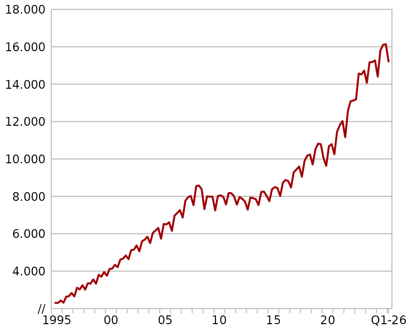
Tale koda pa ga bi shranila kot graf1.pdf:
prep_chart(df1) |>
save_chart("graf1.pdf")Input podatki
Funkcija prep_chart() ima prvi (in edini obvezen)
argument data, ki mora biti en sam data.frame.
Podatki v njem pa so lahko:
- v wide formatu (torej en stolpec z obdobjem in en ali več stolpcev z vrednostmi)
- v long formatu (torej en stolpec z obdobjem, en stolpec s kategorijami in en stolpec z vrednostmi).
- v long+ formatu, kjer je več stolpcev s kategorijami - v tem primeru bo funkcija sama združila vse stolpce s kategorijami v enega.
Preden začneš risati graf, ustrezno pripravi input podatke! To pomeni predvsem filtriraj, da so notri samo podatki, ki jih želiš vizualizirati.
Če je v data več serij, bo funkcija avtomatično vzela
samo prvih 8.
V vsakem primeru mora torej imeti stolpec z obdobjem, čeprav je vseeno kako se imenuje, dokler je v enem od naslednjih formatov:
-
Dateformat - oznaka meseca v formatu
2023M02 - oznaka četrtletja v formatu
2023Q2 - samo letnica v formatu
2024
Knjižnica lahko poleg mesečnih, kvartalnih ali letnih podatkov načeloma prikazuje tudi druge datume (recimo dnevne ali tedenske).
Če je slučajno stolpcev z obdobjem več, bo uporabljen prvi.
Priprava grafa
Funkcija prep_chart() rabi samo data
argument, ostali so opcijski
type
Default je "line". Alternativa je "bar". Če
hočeš kombinirati oba tipa, potem moraš napisati vektor v dolžini
števila prikazanih spremenljivk, recimo
c("line", "bar", "line").
Dodana je tudi možnost "area", ki pa deluje samo v dveh
primerih:
- če je samo ena serija izbrana, potem se svetlo sivo obarva površina
med serijo in
y=0(oz., če gre za indeksy=100) - če gre za dve seriji, se s svetlo sivo obarva površina med njima (uporabno za min-max).
Area tudi deluje samo v kombinaciji z line, ne pa bar.
y_axis (in y_axis2)
Oznaka y-osi, default je prazen. V primeru, da je y_axis
enak “Indeks”, se avtomatično izriše poudarjen gridline na y=100,
drugače ga moraš dodati sam (glej emphasis). V primeru
dvojne y osi, obstaja tudi argument y_axis2.
legend
Če pustiš NULL, se za oznake v legedni uporabijo imena
stolpcev (v wide formatu) oz. kategorij (v long formatu). Sicer pa
napiši vektor v dolžini števila spremenljivk.
colours
Če pustiš NULL, se po defaultu uporabijo UMAR barve po
naslednjem vrstnem redu:
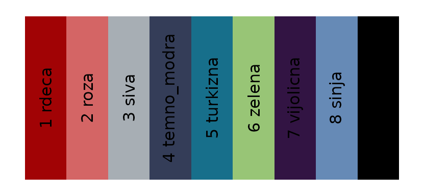
Ta vrstni red lahko uporabiš tudi, da sam določiš barve, recimocolours = c(6,3,1).
Ker je dovoljenih največ 8 serij, bo avtomatično uporabljenih prvih 8
barv, dodana pa je tudi črna na 9. mestu, torej lahko s
colours = 9 dobiš recimo samo črno linijo.
Načeloma lahko tudi direkt uporabiš HEX barve, recimo
colours = "#A10305", čeprav to potem ni po našem CGP-ju,
ampak ta možnost obstaja.
dashed in dotted
Izjemoma je potrebno (ponavadi samo eno) linijo posebej poudariti,
kar ponavadi naredimo tako, da ji določimo črno barvo (9, glej zgoraj)
in izberemo črtkan način, tako da izberemo
dashed = [indeks izbrane serije], recimo
dashed = 3 za tretjo serijo.
xmin in xmax
Default razpon x-osi je celoten razpon podatkov, ki ga lahko tudi
skrajšaš, ponavadi z xmin, ki mora biti v obliki
xmin = "2015-01-01"
stacked
Če je katerakoli od serij tipa "bar", potem daš tukaj
lahko stacked = TRUE, da dobiš naložene stolpce.
emphasis
Poudarjanje vzporednih gridline-ov lahko kontroliraš z recimo
emphasis = 100. Po defaultu se vedno poudari nula, in pa
tudi 100-tka, če je y-axis = "Indeks".
legend_columns
Defualt je 2, gre za število stolpcev legende. Recimo, če so zelo
dolge oznake, lahko daš legend_columns = 1.
note
Pod grafom je možno dodati tudi opombo. Če je opomba predolga, se bo
sama prelomila v novo vrstico, če pa jo želiš sam prelomiti, to narediš
tako da dodaš "\n" tam, kjer želiš prelom (brez
presledka!). npr:
..., note = "Vir: Surs.\nOpomba2, ta se pojavi v novi vrstici.", ...
forecast
Predvsem za uporabo pri napovedi, da lahko s svetlo sivo označiš pravokotnik od t0 do t1.
forecast = c("2025-01-01", "2027-12-31")
language
Opciji sta "si" (kar je default) in "en".
Od izbire je odvisno kako so meseci izpisani na x-osi, tisočice in
decimanle pike/vejice na osi in “index”/“indeks”, ki se izpiše na y-osi,
če so vse serije transformirane v indekse (in nisi sam določil naslova
y_axis .
ylim (in ylim2)
Ročna določitev razpona y-osi namesto avtomatične, npr. kadar hočeš prikazati več grafov vzporedno z isto y-osjo. Vektor z dvema številkama, kjer je prva manjša od druge:
ylim = c(80, 120)- default je
NULL, kar pomeni, da funkcija sama določi “lepe” limite. - v primeru dveh y osi lahko uporabiš tudi
ylim2za razpon desne osi.
axis
Od verzije 1.4 dalje, je omogočena kontroverzna nova funkcija in
sicer dvojna y-os. Z argumentom axis določiš na kateri osi
želiš posamezno serijo in sicer je 1 običajna leva os,
2 pa desna os. Prva serija na desno in druga na levo se
naredi takole:
axis = c(1, 2)
V tem primeru uporabi tudi argument y_axis2, da določiš
naslov druge osi.
Funkcija bo sama določila primerne razpone obeh osi, da zajamejo vse
podatke in da so hkrati oznake in grid-line-i na obeh oseh poravnani, da
so nule poravnane ipd. Če se ti ne dopade, lahko tudi vsiliš svoje
razpone s pomočjo ylim in ylim2.
y_ref in y_ref2
V izjemnih primerih je včasih pri dvojni y-osi zaželeno, da se ne poravnata obe ničli, ampak hočeš poravnati ničlo s stotko…
vline
Dodana je tudi možnost dodajanja črtkane vertikalne linije (za označevanje preloma recimo, razlago potem obvezno vpiši tudi v opombo!). Lahko dodaš eno ali več njih, vedno jih vnesi v ISO obliki:
vline = c("2022-01-01", "2023-01-01")
Transformacije
Obstaja tudi funkcionalnost za transformiranje serij. Možno je dodati
drsečo sredino (rolling), medletne, četrtletne in mesečne
rasti (growth) in izračunati indeks z določeno osnovo
(index). Transformacije je mogoče (i) aplicirati na vse
serije naenkrat ali (ii) na vsako serij posebej - v tem primeru mora
imeti vektor enako dolžino kot je število serij in pri tem moraš
uporabiti NA za serije, ki se ne transformirajo.
Pazi: rast, glajenje in indeksiranje ima v grafih načeloma smisel samo, če je aplicirano na vse serije naenkrat. Možnost (ii) je zato namenena predvsem preskakovanju serij, ki transformacije ne rabijo (ker so že pravilno transformirane), ne pa da v istem grafu uporabiš npr. različne indekse ali različna obdobja glajenja. V tem primeru, bo funkcija izdala opozorilo.
rolling
Izbereš število obdobij, recimo rolling = 3 bi izračunal
drsečo sredino za zadnja tri obdobja (karkoli so). Drseče sredine so vse
desno poravnane, ker v glavnem samo to uporabljamo, če bo potreba, lahko
dodamo tudi “c”. Če želiš recimo hkrati prikazati zglajeno in originalno
serijo, potem moraš imeti isto serijo dvakrat v data in
potem uporabiti rolling = c(3, NA), tako bo ena ostala
nedotaknjena, druga pa zglajena.
growth
Možne so tri opcije:
-
"YOY"izračuna medletno rast - ne glede na to ali so podatki mesečni, četrtletni ali letni. -
"QOQ"izračuna rast glede na prejšnje četrtletje - deluje samo, če so podatki četrtletni. -
"MOM"izračuna rast glede na prejšnji mesec - deluje samo, če so podatki mesečni.
Spet lahko uporabiš transformacijo na vseh serijah naenkrat, ali pa
samo na izbranih serijah: index = c("YOY", NA, NA).
index
Izračuna indeks glede na bazno obdobje, ki je lahko v eni od treh oblik:
- letnica:
index = 2015, deluje na letnih, četrtletnih in mesečnih podatkih - četrtletje
index = 2015Q1, deluje samo na četrtletnih podatkih - mesec:
index = 2015M01, deluje samo na mesečnih podatkih
Spet lahko uporabiš transformacijo na vseh serijah naenkrat, ali pa
samo na izbranih serijah: index = c(2020, NA, NA).
Primeri bolj kompleksnih grafov
Več serij - linijski z dodanim vline
Več linij, dodane oznake za legendo in y os, izbira barv:
prep_chart(raw_data[c(1,4:5, 8:9)], # poleg obdobja so izbrani še štirje stolpci s podatki
title = "Več serij - linijski",
y_axis = "Mio EUR",
legend = paste("Serija", 1:4),
colours = c(1,6,2,5),
xmin = "2020-01-01",
vline = "2023-01-01")|>
view_chart()
#> Warning in Sys.setlocale("LC_TIME", "Slovenian_Slovenia.1250"): OS reports
#> request to set locale to "Slovenian_Slovenia.1250" cannot be honored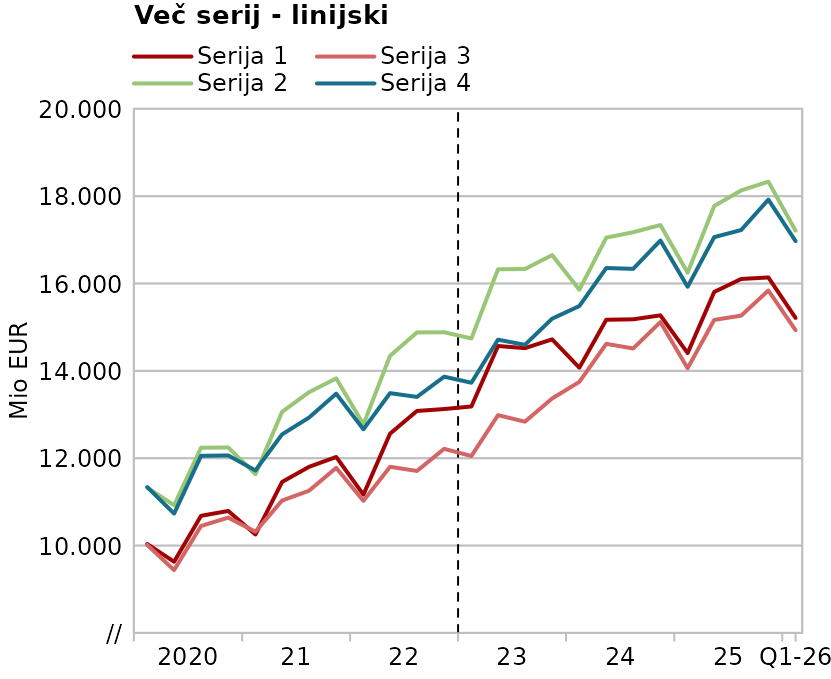
Več serij - stolpični + medletna rast
Stolpični (ne naložen) z medletno rastjo - gre za četrtletne podatke.
prep_chart(raw_data[c(1,4:5)],
title = "Več serij - stolpični + medletna rast",
type = "bar",
y_axis = "Medletna rast, v %",
legend = paste("Serija", 1:2),
colours = c(1,5),
xmin = as.Date("2020-01-01"),
growth = "YOY")|>
view_chart()
#> Warning in Sys.setlocale("LC_TIME", "Slovenian_Slovenia.1250"): OS reports
#> request to set locale to "Slovenian_Slovenia.1250" cannot be honored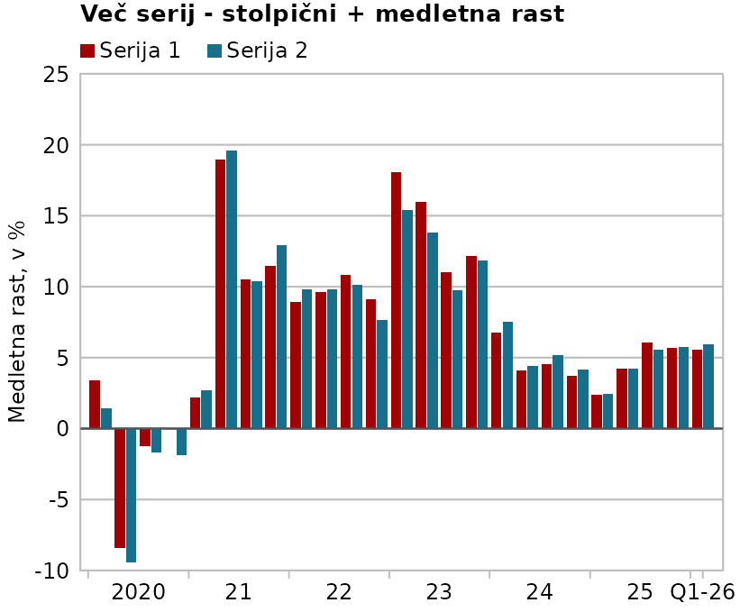
Kombiniran in naložen + črtkana linija
prep_chart(raw_data[c(1,3,2, 6)],
title = "Več serij - kombiniran in naložen + črtkana linija",
type = c("bar","bar", "line"),
stacked = TRUE,
dashed = 3,
y_axis = "Mio EUR",
legend = paste("Serija", 1:3),
colours = c(2,1,9),
legend_columns = 3,
xmin = as.Date("2020-01-01"))|>
view_chart()
#> Warning in Sys.setlocale("LC_TIME", "Slovenian_Slovenia.1250"): OS reports
#> request to set locale to "Slovenian_Slovenia.1250" cannot be honored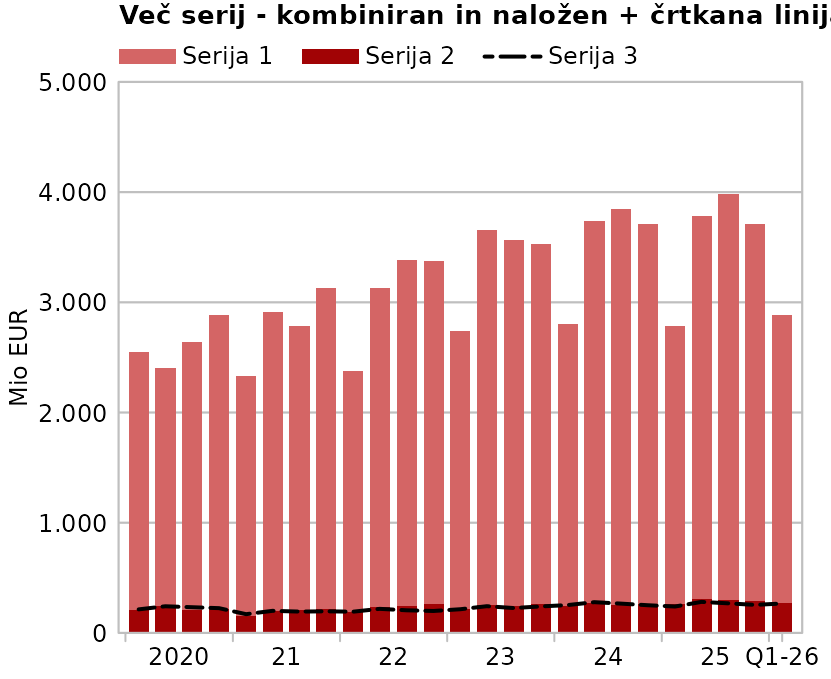
Transformacija samo na izbrano serijo: zglajena in originalna hkrati
prep_chart(raw_data[c(1,3, 3)],
title = "Zglajena in originalna linija",
type = c("line", "line"),
y_axis = "Mio EUR",
legend = paste("Serija", 1:2),
colours = c(1,3),
legend_columns = 2,
rolling = c(3, NA),
xmin = as.Date("2010-01-01"))|>
view_chart()
#> Warning in Sys.setlocale("LC_TIME", "Slovenian_Slovenia.1250"): OS reports
#> request to set locale to "Slovenian_Slovenia.1250" cannot be honored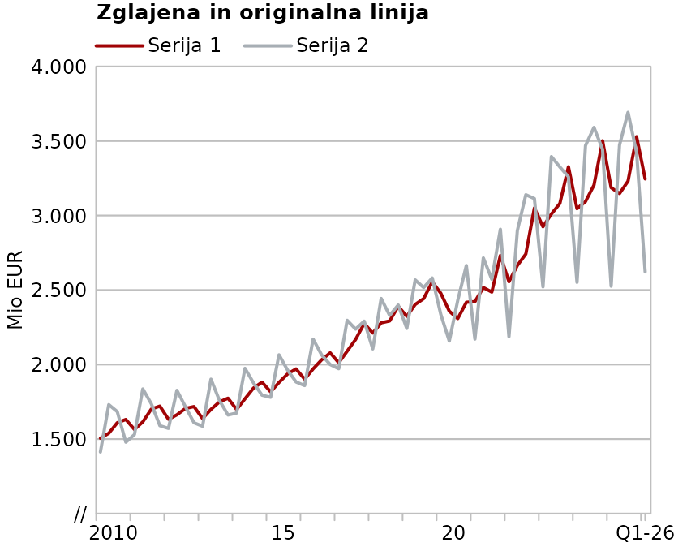
Zglajen in indeksiran, dolga legenda plus napoved
chart5 <- prep_chart(raw_data[c(1,4:5, 8:9)],
title = "Zglajen in indeksiran",
y_axis = "4Q drseča sredina, indeks (100=2023Q1)",
legend = c("Zelo zelo dolgo ime prve spremenljivke, indeksirane na 2023Q1",
"Zelo zelo dolgo ime druge spremenljivke, indeksirane na 2023Q1",
"Zelo dolgo ime tretje spremenljivke, indeksirane na 2023Q1",
"Dolgo ime četrte spremenljivke, indeksirane na 2023Q1"),
legend_columns = 1,
colours = c(3,4,1, 8),
index = "2023Q1",
rolling = 4,
emphasis = 100,
xmin = as.Date("2020-01-01"),
forecast = c("2025-01-01", "2026-03-31"))
chart5 |>
view_chart()
#> Warning in Sys.setlocale("LC_TIME", "Slovenian_Slovenia.1250"): OS reports
#> request to set locale to "Slovenian_Slovenia.1250" cannot be honored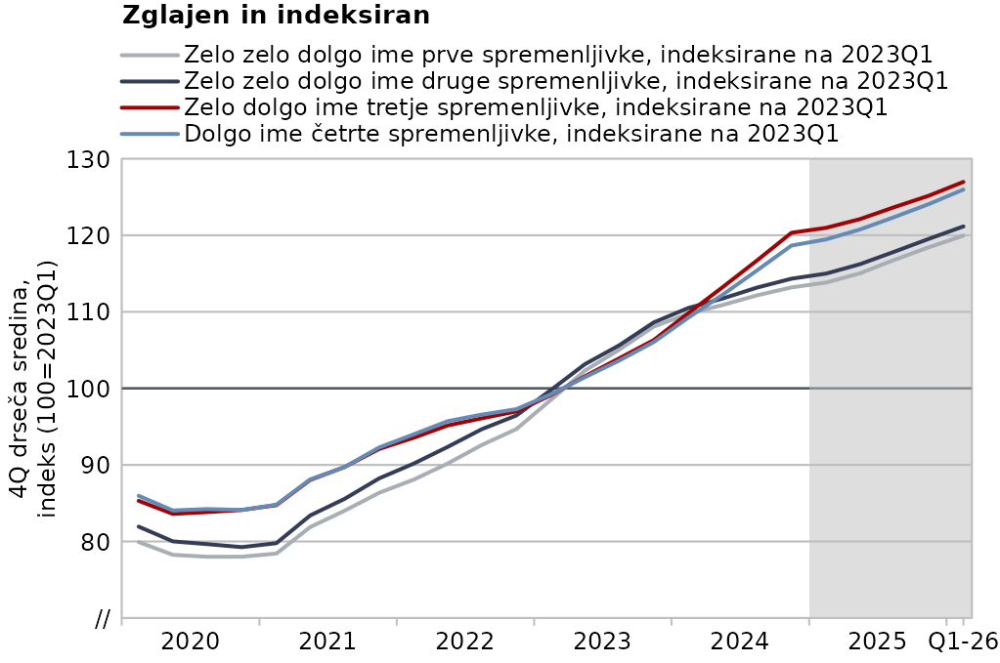
Min-max area kombiniran z linijskim in z opombo
Pri "area" grafih je potrebno biti malo bolj
pozoren:
- čeprav sta dve seriji tipa “area”, bo upoštevan samo en vnos za legendo
- barva je avtomatično transparentna siva, zato ne bosta upoštevana vnosa za barvo.
Vektorja za legend in colours
morata biti vseeno vedno enako dolga kot število serij. Vnosi,
ki se ne bodo upoštevali so lahko zaradi večje preglednosti tudi
NA kot v primeru spodaj.
prep_chart(raw_data[c(1,4,9,5,8)], # poleg obdobja so izbrani še štirje stolpci s podatki
title = "Area + linijski",
y_axis = "Mio EUR",
type = c("line", "line", "area", "area"),
legend = c("Slovenija", "EU", "min-max", NA),
colours = c(1,5,NA, NA),
legend_columns = 3,
xmin = as.Date("2020-01-01"),
note = "Vir: SURS. \nOpomba v drugi vrstici.")|>
view_chart()
#> Warning in Sys.setlocale("LC_TIME", "Slovenian_Slovenia.1250"): OS reports
#> request to set locale to "Slovenian_Slovenia.1250" cannot be honored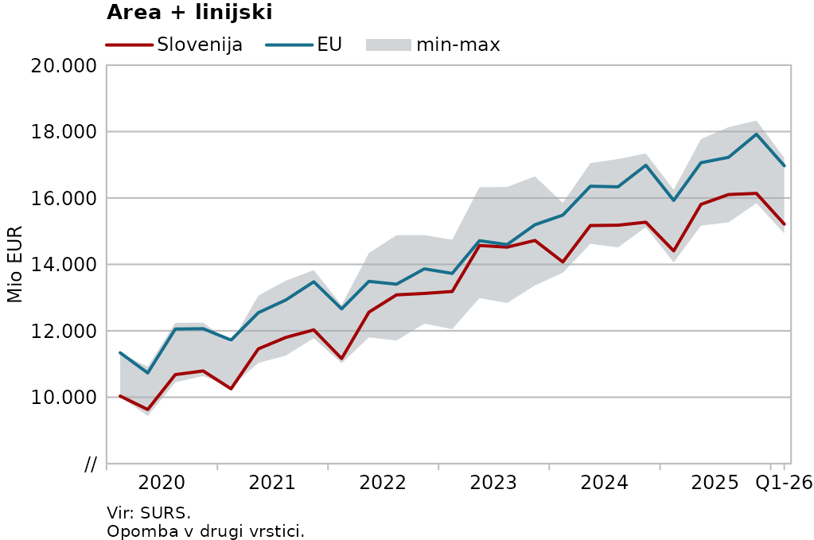
Primer grafa z dvojno y-osjo
Naslove osi dobiš z y_axis in y_axis2, če
želiš pa tudi razpon osi z ylim in ylim2.
Tvoja odgovornost je tudi, da v legendi pravilno označiš na keteri osi je kaj.
prep_chart(raw_data[c(1,2,3)],
title = "Dve y osi",
y_axis = "Mio EUR",
y_axis2 = "nekaj drugega",
# ylim2 = c(0,6000),
# ylim = c(0,450),
axis = c(1,2),
type = c("line", "line"),
legend = c("Serija leva os", "Serija desna os"),
colours = c(1,5),
legend_columns = 2,
xmin = as.Date("2020-01-01"))|>
view_chart()
#> Warning in Sys.setlocale("LC_TIME", "Slovenian_Slovenia.1250"): OS reports
#> request to set locale to "Slovenian_Slovenia.1250" cannot be honored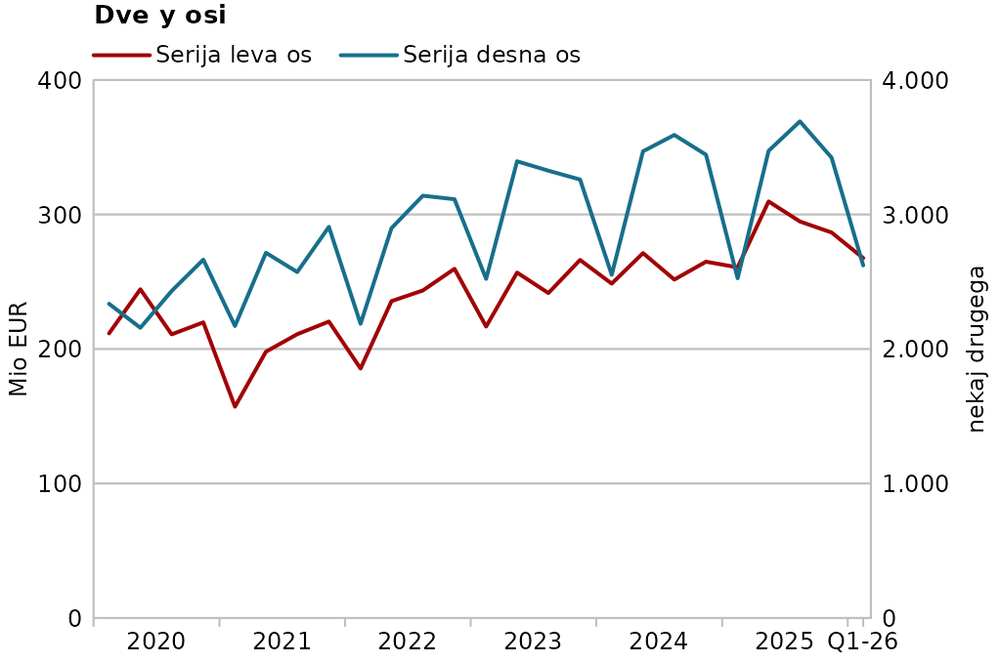
# Ogled grafaFunkcija prep_chart() pripravi konfiguracijo, ki jo
lahko shraniš v objekt (glej kodo za prejšnji graf):
chart5
#> UMAR chart configuration
#> Series: 4
#> Types: line, line, line, line
#> Title: Zglajen in indeksiran
#> Y-axis title: 4Q drseča sredina, indeks (100=2023Q1)
#> [1] Zelo zelo dolgo ime prve spremenljivke, indeksirane na 2023Q1 (line, #A7AEB4)
#> [2] Zelo zelo dolgo ime druge spremenljivke, indeksirane na 2023Q1 (line, #343D58)
#> [3] Zelo dolgo ime tretje spremenljivke, indeksirane na 2023Q1 (line, #A10305)
#> [4] Dolgo ime četrte spremenljivke, indeksirane na 2023Q1 (line, #668AB6)ali pa neposredno “pipe-aš” v view_chart() kot v
prejšnjih primerih.
prep_chart(...) |>
view_chart()NB: ogledovanje v viewjer-ju (verjetno Rstudia) je malo manj pod našo kontrolo, zato je možno da tam kdaj ne delajo čšž-ji ali pa je font napačen ali pa da oznake na x-osi niso čisto optimalne. Za popoln nadzor je potrebno shranjevanje v pdf.
Shranjevanje grafa
Ko si zadovoljen z grafom, ga lahko shraniš s pomočjo funkcije
save_chart(). Shranjuješ lahko v svg, pdf ali v png format.
Načeloma je svg boljši, ker je vektorski, zato je to tudi default.
save_chart() ima tri argumente:
-
filenameje obvezen argument. Lahko je s končnico ali brez, v slednjem primeru se bo dodala glede na vrednost argumentaformat -
formatmožni sosvg,pdfinpng. Default jesvg. Se ignorira, če je že vfilename-u. -
sizeima tri možnosti (po našem CGP-ju):
-
1(small) 7 x 9cm -
2(normal) 11 x 9 cm in -
3(large) 22 x 8cm
Takole recimo prejšnji graf shraniš v pdf velikosti 22 x 8 cm:
chart5 |>
save_chart("zglajen_in_indeksiran", size = 3)Še par malenkosti
mpg warning
Pri uporabi se lahko pojavi opozorilo
'mgp[1:3]' are of differing sign. To je posledica tehnične
podrobnosti R-jeve funkcije par(), ki se ji je očitno
nemogoče izogniti - in sem se res potrudila - amapk ne vpliva na izgled
grafa, tako da ga lahko ignoriraš.
Umar barve
Tale funkcija je lahko še kje drugje uporabna, zato jo posebej
dokumentiram: umar_cols(). V bistvu je samo named vektor z
našimi barvami in s posebno print metodo (to probaj pri sebi, da vidiš
kako se izpišejo barve!):
umar_cols()
#> #A10305 rdeca
#> #D46565 roza
#> #A7AEB4 siva
#> #343D58 temno_modra
#> #176F8B turkizna
#> #98C576 zelena
#> #321443 vijolicna
#> #668AB6 sinja
#> #000000 crna
#> #BFBFBF gridlines
#> #50575E emphLahko jo uporabljaš tudi drugje, tako da uporabiš indeks barv ali pa njihovo ime
barplot(1:3, col = umar_cols(1:3))
barplot(1:3, col = c(umar_cols("rdeca"),
umar_cols("sinja"),
umar_cols("zelena")))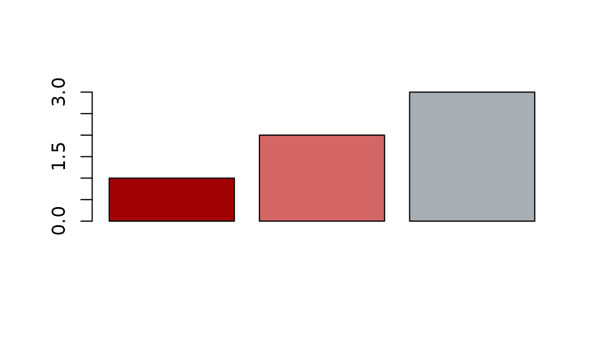
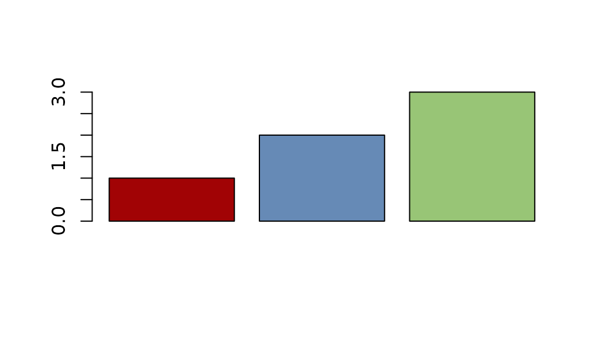
težave s čšž-ji
Če se ti čudno izpisujejo čšžji, potem poglej kaj ti pokaže
l10n_info(), ali je
$`UTF-8`
[1] TRUEV R verziji 4.2 in kasnejših je že native UTF-8 suport, ampak mora
biti aktivna. Če ti kaže false, potem si v .Rprofile dodaj
spodnjo vrstico, restartaj R in probaj še enkrat.
Sys.setlocale("LC_CTYPE", "English_United Kingdom.utf8")
ToDo list
Seznam idej in planov, not in any particular order:
možnost fixiranja y-osi (kadar hočeš več grafov vzporedno z isto y-osjo).dvojne y-osi…language option si/en, ki določa mesece, tisočice in decimalke + indeks/index switch- možnost dodatnih formatov po želji, za prezentacije recimo
opcija za dodajanje opomb spodajmožnost izvajanja transformacij na posameznih serijah ločenomožnost ponovne uporabe iste serije (da je lahko enkrat zglajena in enkrat originalna recimo)- integracija v shiny app, da lahko ne-R-sodelavci direkt uploadajo svoje podatke in dobijo ven lep graf. (in potem seveda še dodajajo serije iz baze, ampak otompotom).
ugotovit rešitev za kvakico, kadar se y-os ne začne na nuli, zaenkrat to pade na Mojcopopravi kvakico na //- možnost agregiranja
M->Q, M->A, Q->A, z izbrano funkcijo (sum, mean) - možnost sočasnega prikazovanja podatkov različnih intervalov, ampak verjetno ne, ker tega ne delamo..
- drseče sredine centrirane, če bo želja/potreba
- mogoče opcija, da si shraniš tudi celo kodo za graf, ki jo lahko po potrebi tweakaš, čeprav to je kar messy in vprašanje, če je res potreba
možnost prikaza podatkov, ki niso M, Q ali A.možnost prikaza samo ene vrstice podatkov - uporabno za quick barchart- razširitev arhitektire za prikaz kategoričnih (ne-časovnih) spremenljivk…
posebna barvna paleta za Janezadodana črna barvadodana možnost za črtkane in pikčaste linijedodan “area” type za eno ali dve seriji- dodaj alpha za opacity barv.
- dodaj y_incl, za recimo 0 ali 100, da je vedno not.
- dodaj long term average indeks